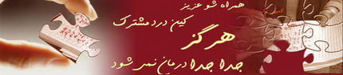

|
|

امروز و من و کمپین / وبلاگ بی بی مهتاب
سه شنبه5 تیر 1386
امروز تجدید دیداری شد با دوستان کمپینی ، چند ساعتی کنار هم نشستیم و گپ زدیم و از هم چیز یاد گرفتیم ، از تجربه هامان گفتیم و از توانایی هایمان ، از مشکلاتمان گفتیم و از ناتوانی هایمان .
کمپین را دوست دارم و کمپینیها را ، که هر کدام از جایی هستند و سنی و طبقه ای . چیزی که بیشتر جلبم می کند حس وحدت عجیبیست که در کمپین تجربه می کنم . هر کس هرچه در چنته دارد برای همه ست ، کسی چیزی را دریغ نمی کند ، چه آموخته هایشان و چه داشته هایشان ، مادرهایی که به خاطر دخترهایی که نمی شناسند ساعتها جلوی زندان می ایستند و پدرهایی که برای دخترهایی که نمی شناسند وثیقه آزادی می دهند ...
کمپین را دوست دارم چون همه با همند و از هم . کسی غریبه نیست . کسی رئیس نیست ، کسی بزرگتری نمی کند ، همه تجربه هاشان را به اشتراک می گذارند ، همه درس میگیرند و همه کنار هم بزرگ می شوند ، کنار هم مقاوم می شوند ، کنار هم می ایستند ، کنار هم می خواهند ...
کمپین را دوست دارم ، همه همراهند و کسی به دردش تنها نمی ماند . کمپین را دوست دارم و کمپینیها را که با سعی مشترک در فکر حل مشکلند و نه پاک کردن صورت مسئله .
کمپین را دوست دارم چون برای همه است ، کمپینیها را می شناسم بی اینکه بشناسمشان ...
و لوگوی زیبای وبلاگ بی بی مهتاب:
